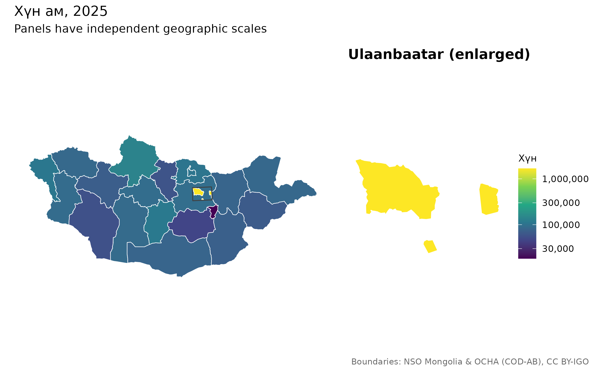
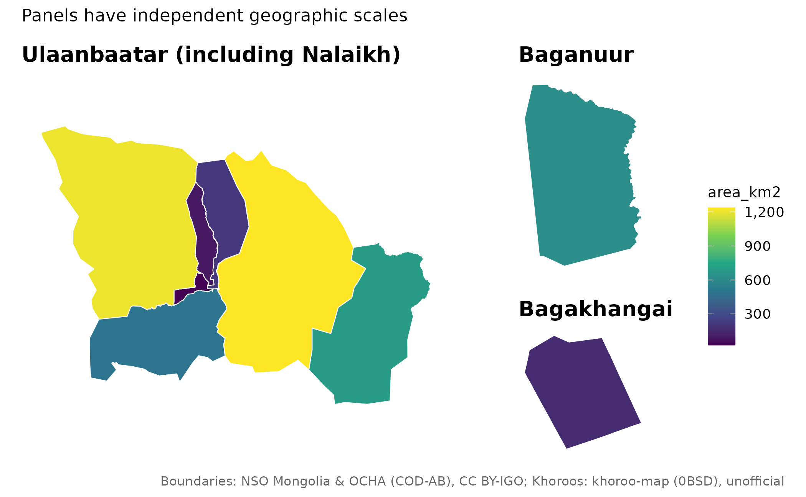

Шалгаж баталгаажуулах нэгтгэл ба харьцуулах зураг
Source:vignettes/articles/audited-workflows.Rmd
audited-workflows.RmdМөр бүрийн шийдвэрийг хадгалах
Боломжтой бол кодоор нэгтгэнэ. Давхардсан нэрд эцэг нэгжийг
by_parent баганаар эсвэл within хүрээгээр
заана.
x <- mn_join(data.frame(place="Bayangol", cases=12), "place",
level="soum", within="Ulaanbaatar")
mn_join_audit(x)[c("row","x","pcode","status","action")]
#> # A tibble: 1 × 5
#> row x pcode status action
#> <int> <chr> <chr> <chr> <chr>
#> 1 1 Bayangol MN1107 exact joinedmn_match(details=TRUE) нь хэвийн болгосон түлхүүр,
боломжит нэгж, тааруулалтын арга, засварын зайг харуулна. Засварын зай
нь зөв таарсан магадлал биш. strict=TRUE нь дутуу,
таараагүй, ойролцоо түлхүүр, хилгүй нэгж, давхардсан статистикийн
түлхүүрт зогсоно.
Улаанбаатарын кодыг статистикийн бүлэг бүрд нөхөх
ҮСХ-ны 5, 511 код тухайн хүснэгтэд нийслэлийн ижил статистикийг
илэрхийлж байгааг эхлээд нягтална. Он, сар, хүйс, үзүүлэлт зэрэг бүх
хэмжээсийг strata, тоон хэмжигдэхүүнийг
value_cols-д өгнө.
d <- data.frame(Region=c("5","511","5","511"),
Month=c("July","July","August","August"),
value=c(10,NA,NA,20))
x <- mn_join(d,"Region",level="aimag",strata="Month",value_cols="value")
#> ℹ Using Ulaanbaatar region values to fill capital data within 1 statistical
#> stratum/strata.
sf::st_drop_geometry(x[x$pcode=="MN11",c("Month","value")])
#> # A tibble: 2 × 2
#> Month value
#> * <chr> <dbl>
#> 1 July 10
#> 2 August 20Анхдагчаар нийслэлийн дутуу утгыг бүсээс нөхнө. Зөрүүтэй дутуу бус
утгад анхааруулна. ub_policy="error" нь зөрүүнд зогсож,
"none" нь нөхөлтийг идэвхгүй болгоно. Нийлбэр болон
бүрэлдэхүүн мөрийг давхар тоолж хадгалсан хувийг тооцож болохгүй.
Статистикийн он ба хилийн хувилбар
mn_vintages()[c("id","data_version","geometry_vintage","authority")]
#> # A tibble: 4 × 4
#> id data_version geometry_vintage authority
#> <chr> <chr> <chr> <chr>
#> 1 admin data-v1 COD 2020; Ulaanbaatar khoroo-derived 2026 official…
#> 2 khoroos data-v1 2026 source snapshot; effective date unknown unoffici…
#> 3 codes data-v1 NA source s…
#> 4 admin_high data-v1 COD 2020; Ulaanbaatar khoroo-derived 2026 official…
mn_provenance(mn_khoroos())[c("id","source_revision","effective_date")]
#> # A tibble: 2 × 3
#> id source_revision effective_date
#> <chr> <chr> <chr>
#> 1 khoroos bb1bf18f27e57d7a5aa7fe6d4a17234b40e162c1 NA
#> 2 codes 2025 NAОдоогоор зөвхөн data-v1 геометр бий. Өөр
boundary_version өгвөл алдаа өгнө; өнөөгийн хилийг түүхэн
онтой гэж нэрлэхгүй. Хорооны геометр албан бус, засварлан нэгтгэсэн
эхтэй. Эхийн огноо нь хүчин төгөлдөр болсон огноо биш.
Томруулсан панель ба нийтлэг өнгөний масштаб
mn_inset_ub(fill=area_km2)
mn_map_ub(fill=area_km2)
Панель бүр газарзүйн тусдаа масштабтай; шинжилгээний координатыг
өөрчлөхгүй. Улсын болон хотын өгөгдөл ижил нэгжтэй байх ёстой.
limits, breaks, bins нь
харьцуулах өнгөний масштабыг, midpoint=0 нь өөрчлөлтийн
хоёр чиглэлийн өнгийг тохируулна.
mn_aimag_grid болон mn_ub_grid нь ойролцоо
газарзүйн тор. Нийт хэдэн зуун сумын нэг тороос аймаг тус бүрийн жижиг
зураг илүү уншихад хялбар. Хүн амаар хэмжээтэй Dorling тойрог ашиглах
жишээг англи гарын авлагаас үзнэ үү; эх геометр, тогтворгүй түвшин болон
нууцалсан утгыг тусад нь хадгална.
Растер ба интернетгүй ажиллах
mn_zonal() нь нүдний хамрагдсан хувиар жигнэдэг. Нүд
дотор хүн ам жигд тархсан гэж үзэх тул 1 км тороос байшин тус бүрийн хүн
амыг гаргахгүй. Дундажийн нүдний хувийн жин нь бодит талбайн жин биш.
Медианд exact=FALSE хэрэглэнэ.
Тооцоололд эх хүн амын торыг ашиглах нь зохистой.
mn_population(crs=...) нь жигнэсэн нийлбэрийг эхийн
хадгалсан нийт утгатай тэнцүүлж нормчилно; орон нутгийн хуваарилалтыг
баталгаажуулахгүй. mongolmaps_remapping атрибутаас
тохируулгыг үзнэ.
a <- mn_assets()
a[a$id=="worldpop_2025_1km",c("id","year","resolution")]
#> # A tibble: 1 × 3
#> id year resolution
#> <chr> <int> <chr>
#> 1 worldpop_2025_1km 2025 1kmWorldPop-ийн он, нарийвчлалыг тусад нь татна.
mn_cache_verify() кэшийн нийлбэрийг шалгана. Хуучин
хувилбарыг тодорхой хүсэлтгүй устгахгүй. Хамгаалалттай газрын автоматаар
шинэчлэх оролдлого бүтэлгүй бол өмнөх хүчинтэй кэшийг хадгална.
mn_erase_water() нь шинэ геометр болон
land_area_km2 буцааж, оролтын area_km2-ийг
хэвээр үлдээнэ. Хуурай газар нь хүн ам амьдардаг газартай адил биш.
Нэмэлт давхаргын эхийг mn_citation()-аар тодорхой
нэгтгэнэ.